הכתב הבינוני
מה זה הכתב הבינוני
בסוף שנה א׳ ללימודיי במחלקה, נתקלתי בשלושת הכרכים של ״אסופות כתבים עבריים מימי־הביניים״ — מחקרם של פרופ׳ מלאכי בית־אריה וד״ר עדנה אנג׳ל, שמתפרס על פני למעלה מ־30 שנה וממפה את הכתיבה העברית בימי הביניים. בשנים האחרונות שבתי ולמדתי את הכתבים ועליהם. המחקר מצביע על שיטת כתיבה בעברית, שבמבט ראשון בכלל לא הייתה נראת כמו עברית — לפעמים כמו לטינית, לפעמים ערבית. משהו בצורות האלו שהיו קצת מוכרות וקצת מוזרת משך אותי להמשיך להתעסק בכתבים האלו.
במחקרם, בית־אריה ואנגל מצביעים על שלוש שיטות כתיבה מרכזיות שהיו קיימות בעברית. כולנו מכירים את שני קצות הסקאלה: מצד אחד הכתב המרובע והרשמי (מה שאנו מכנים היום ״כתב דפוס״), ומצד שני הכתב הרהוט והמהיר (״כתב יד״). אך מתברר שבימי הביניים שלטה בכיפה שיטת כתיבה שלישית, שהיוותה נקודת אמצע בין שתי השיטות הללו: הכתב הבינוני.
הצורות של הכתב המרובע נשארו דומות לצורות שהיו קיימות בימי הביניים, בעיקר בגלל ההלכה ומסורת הכתיבה ההדוקה שהגדירה בדיוק איך הצורות צריכות להיראות. הכתיבה הזו הובילה לרוב הפונטים שאנו רגילים לקרוא בהם היום. הכתב הרהוט לעומת זאת, בגלל האופי האישי שלו, השתנה מאוד לאורך השנים, אבל המשיך להתקיים ולהתפתח. אנו מכירים את המופע שלו כפונטים מסוג ״כתב יד״. הכתב הבינוני הפתח לכדי ״כתב רש״י״ במהפכת הדפוס ושם הוא נעצר.
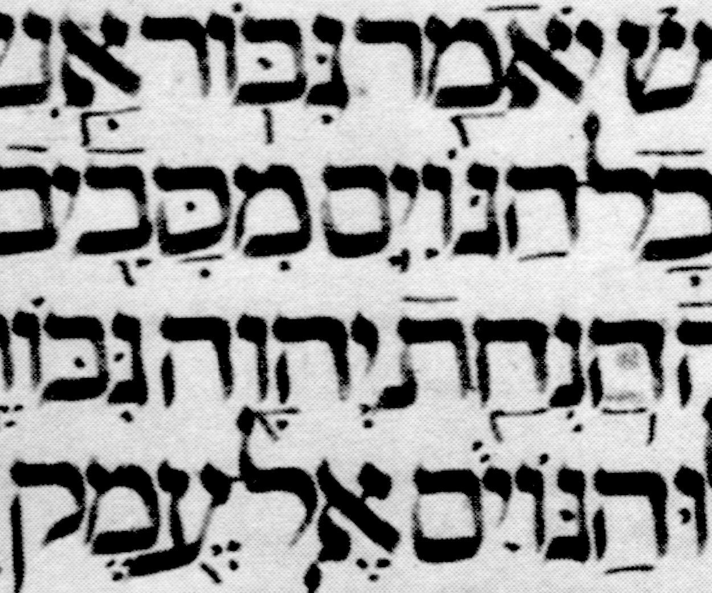
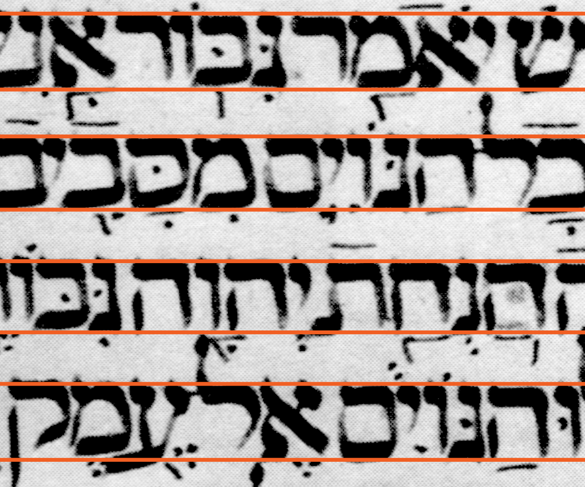
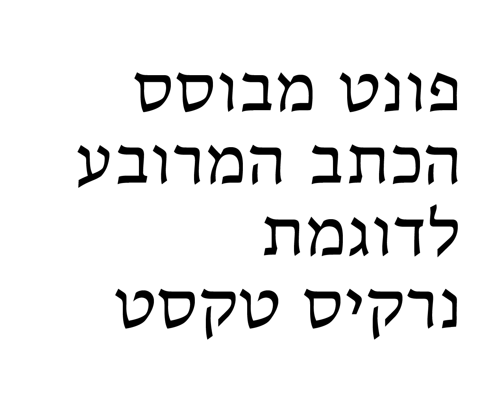
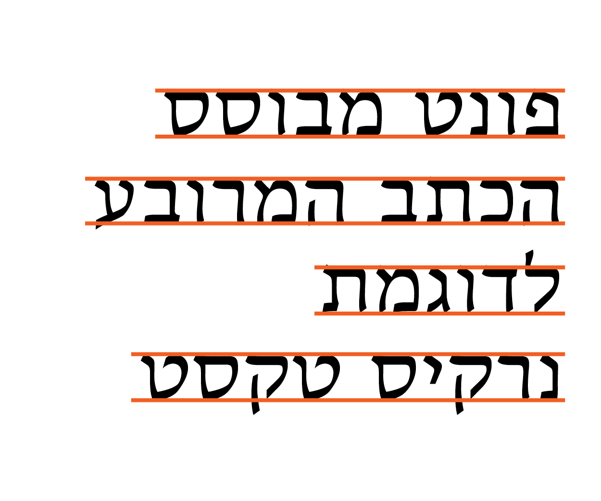
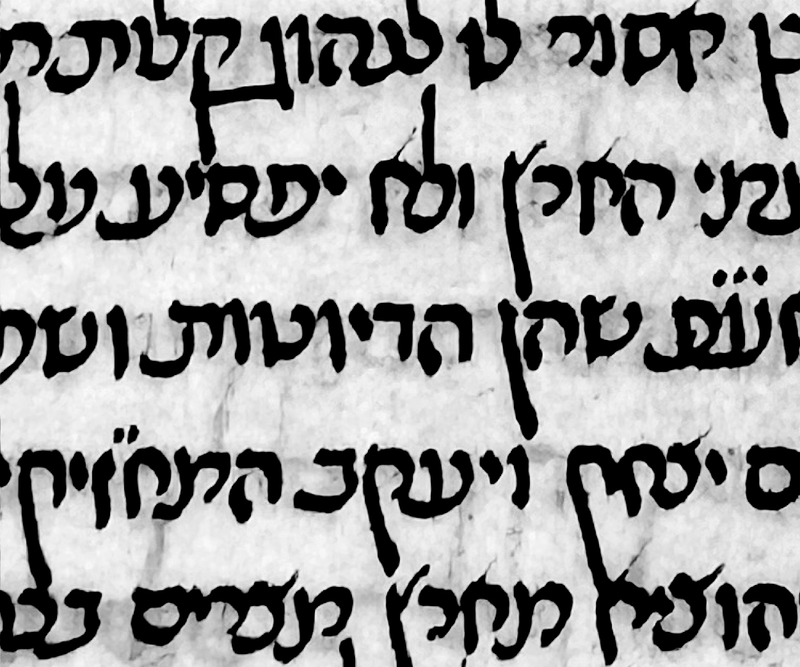
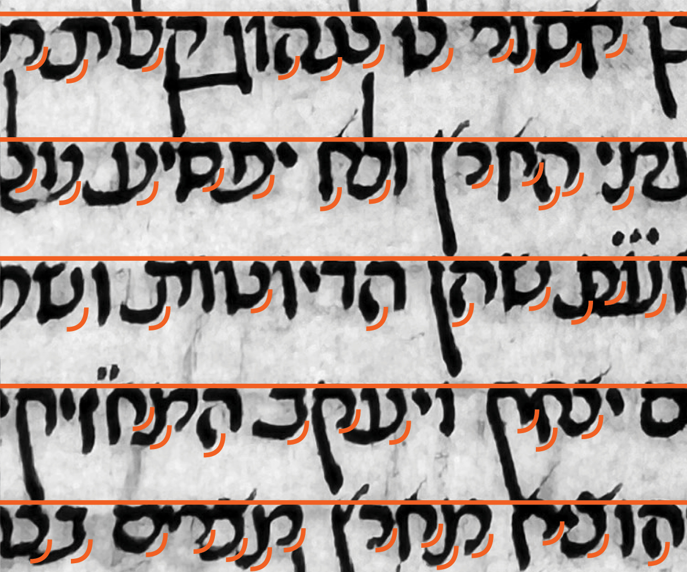
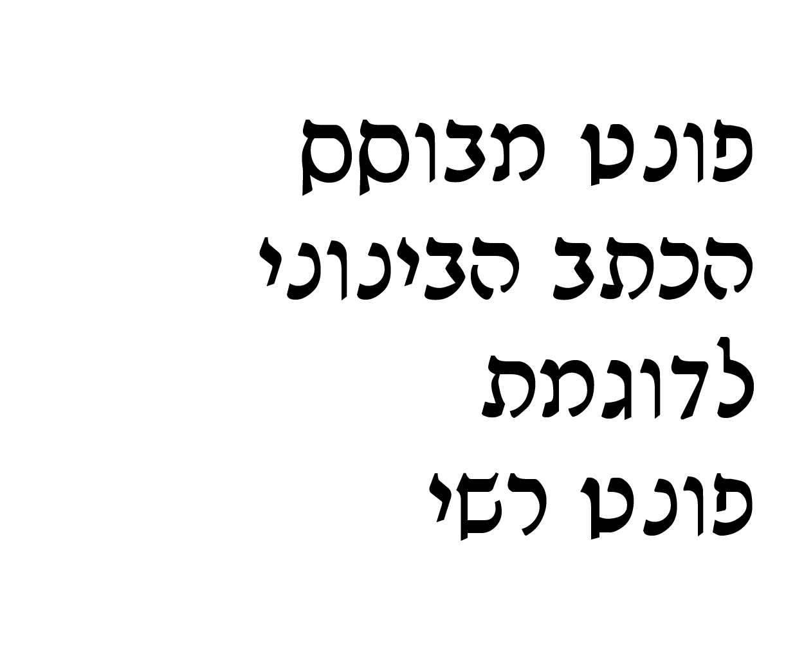
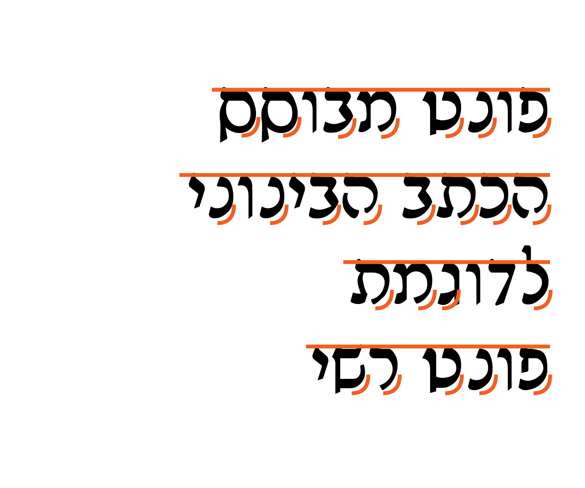
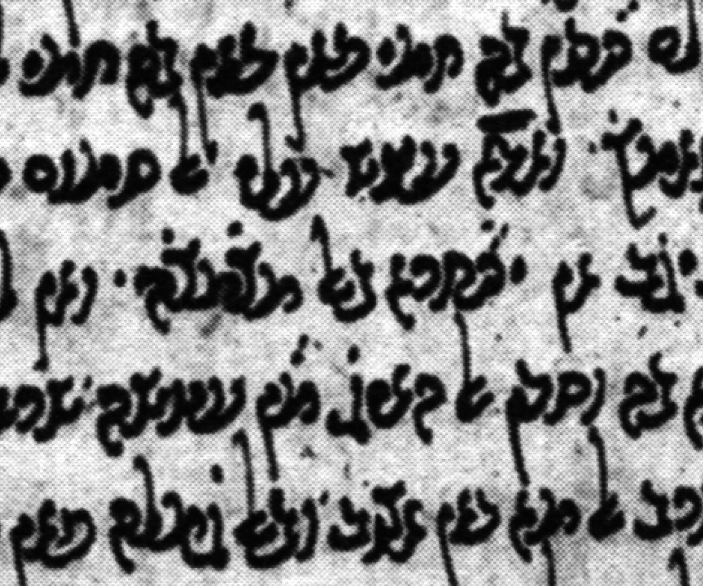
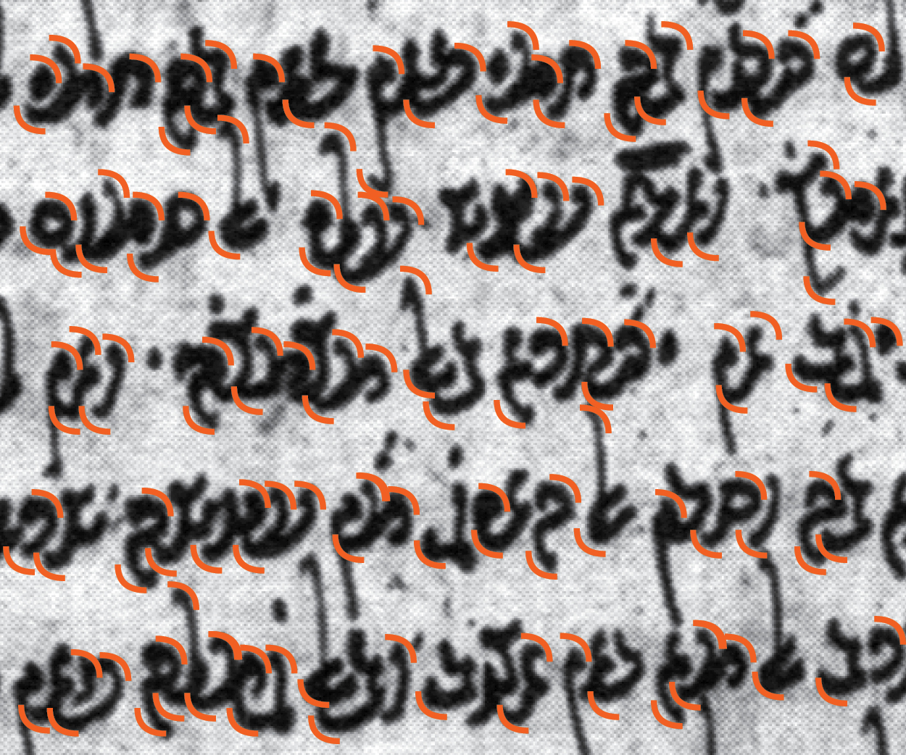
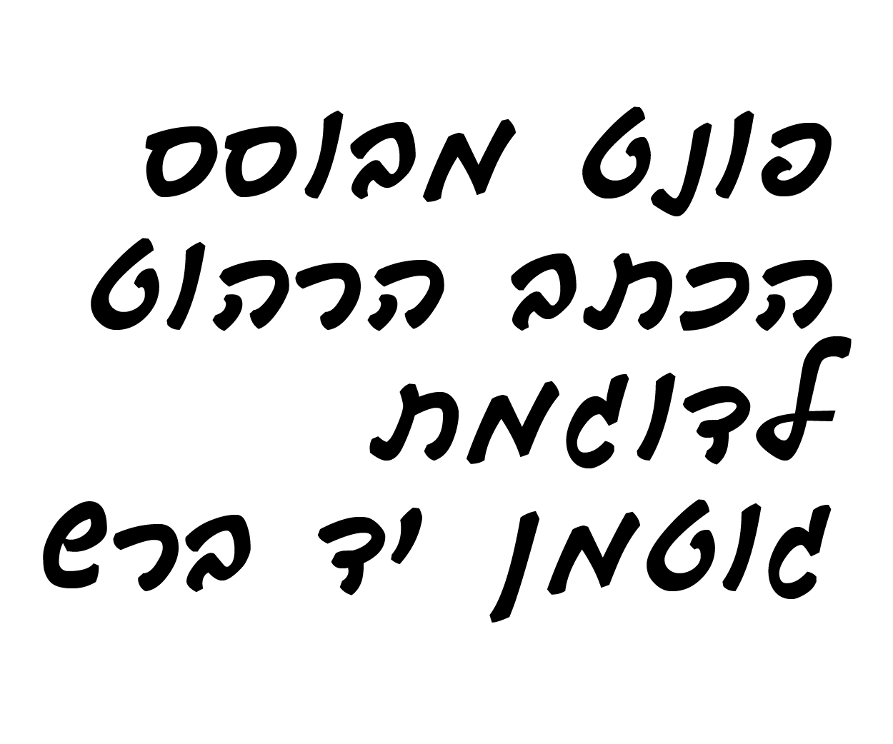
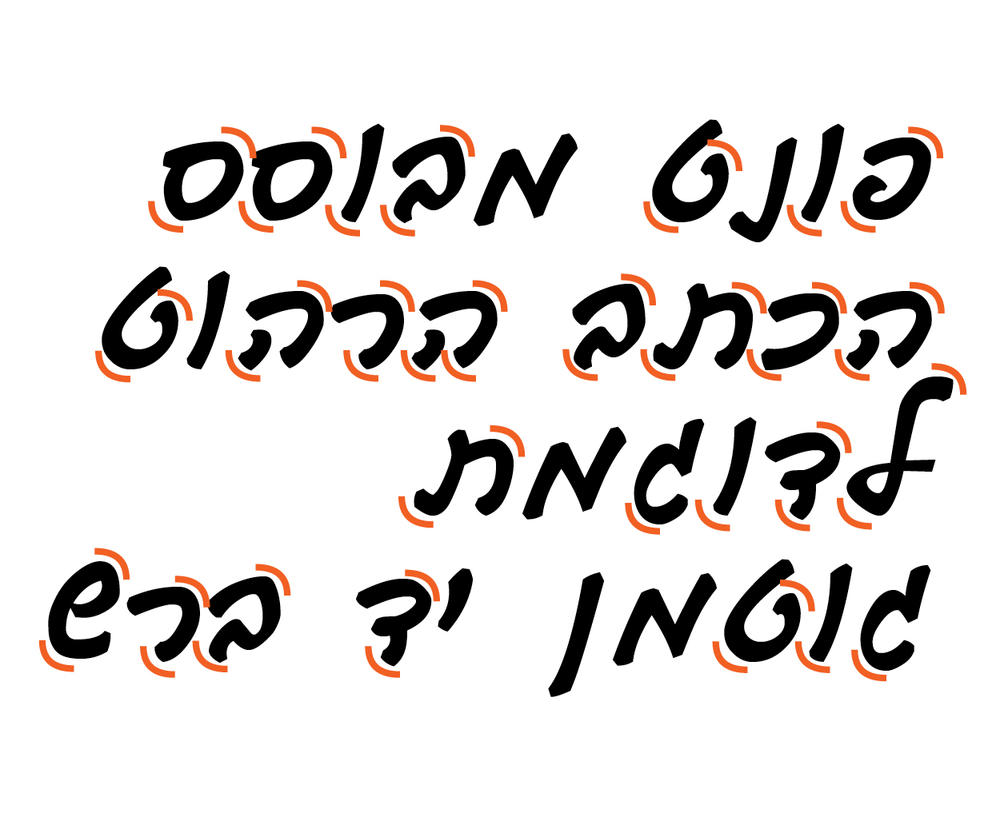
שורה שנייה, מימין לשמאל: פונט נרקיס טקסט (פונט מסוג מרובע), פונט רש״י (פונט מסוג בינוני) וגוטמן יד־בראש (פונט מסוג רהוט).
כדי להבין למה בכלל היינו צריכים כתב אמצע, צריך להבין את התפקיד של כל כתב. הכתב המרובע היה הכתב הייצוגי והקדוש ביותר. הוא שימש כמעט אך ורק לכתיבת ספרי תורה, תנ״ך וטקסטים מקודשים. בגלל קדושתו וחוקי ההלכה הנוקשים, הוא דרש שרטוט איטי, קפדני ומרובה משיכות קולמוס (כמות התנועות של כלי הכתיבה על הדף כדי ליצור את צורת האות), מה שהפך אותו ליקר ואיטי מאוד להפקה — הן מבחינת מקום על הקלף והן מבחינת מהירות הכתיבה. בקצה השני עמד הכתב הרהוט — כתב יד מהיר, משוחרר וחסכוני, ששימש בעיקר לטיוטות, מכתבים אישיים ורישומים יומיומיים.
וכל מה שבין לבין? שם נכנס הכתב הבינוני. הוא שימש למסמכים רשמיים, לספרי מדע, רפואה ופילוסופיה, ובעיקר — לכתיבת פירושים (כמו פירוש רש״י או הרמב״ם) שהקיפו את הטקסט המקודש. הכתב הבינוני אִפשר למעתיקים לכתוב מהר יותר ולחסוך בקלף או נייר יקרים, לחסוך בזמן ובדיו, אך עדיין לשמור על מראה מכובד וקריא.
אם נסתכל על הצורה של הכתבים, נגלה שהכתב הבינוני הוא הלחם בין קודש לחול, בין המרובע לעגול. הכתב המרובע מאופיין בנוקשות וביציבות: יש לו גגות (הקווים העליונים) ובסיסים (הקווים התחתונים) ישרים וזקופים. הכתב הרהוט, לעומתו, הוא עגול לחלוטין וזורם. הכתב הבינוני לוקח קצת מכל העולמות: הוא משמר את הגגות הישרים שנותנים שורות מסודרות וקריאות, אך מאמץ את הבסיסים המעוגלים שמאפשרים ליד לרוץ מהר יותר על הדף. השילוב הזה נותן לו גם נטייה קלה — משהו בין הכתב המרובע הזקוף, לכתב היד שנוטה ממהירות הכתיבה.
עד כמה הכתב הבינוני היה פופולרי? פרופ׳ מלאכי בית־אריה מסכם זאת במספרים:
״בחישוב כולל נמצא שבין שנת 1001 (שנת הפצעתו של הכתב הבינוני והתפשטותו במזרח) ובין שנת 1500 קרוב לרבע מכתבי־היד נכתבו בכתב מרובע וכמעט שלושה רבעים מכל כתבי־היד נכתבו בכתב בינוני, אך רק ארבעה אחוזים מהם נכתבו בכתב רהוט.״
מלאכי בית־אריה, קודיקולוגיה עברית: שימור ושינוי
המבטאים של הכתב הבינוני
השוואה אזורית
כמו שלשפה יש מבטאים שונים, כך גם הכתב הבינוני קיבל ״מבטא חזותי״ בכל אזור שבו חיו יהודים. האותיות אמנם היו אותן אותיות, אך הכלים שבהם השתמשו (לדוגמה: נוצה לעומת קנה) והשפעת הכתב של החברה מסביב (ערבית או לטינית) יצרו סגנונות שונים לחלוטין. המחקר על ההבדלים, השינויים וההשפעות רחבים, וקצרה היריעה מלציין כאן את כולם, אך אלו עיקרי ההבדלים:
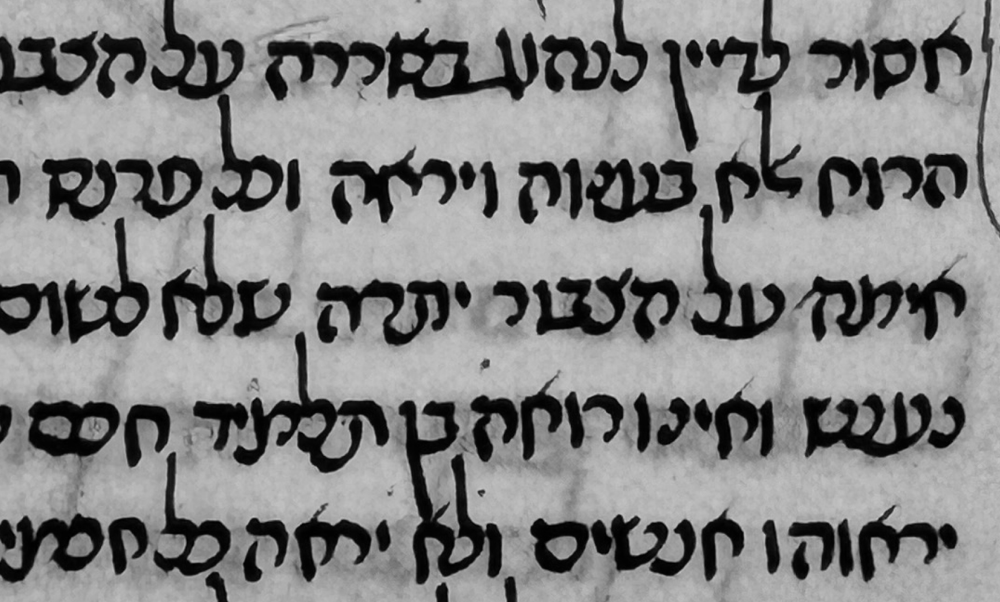
הטיפוס הספרדי
ספרד, איטליה, צפון אפריקה ופרובנס
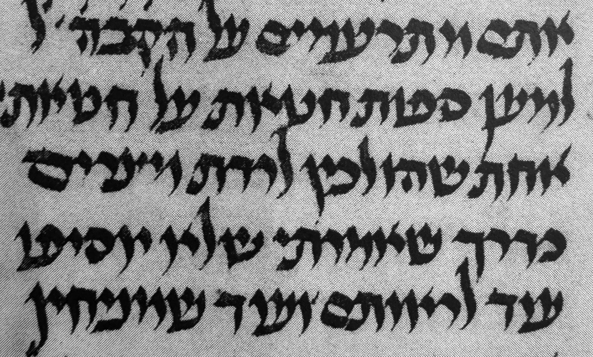
הטיפוס האשכנזי
גרמניה, צרפת, אנגליה
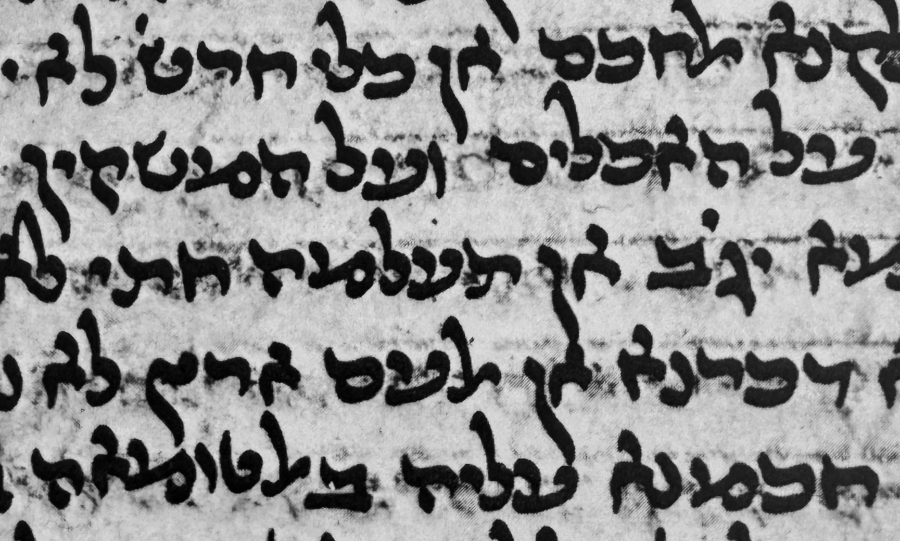
הטיפוס המזרחי
המזרח התיכון, איראן, מצרים, לבנון, ארץ ישראל
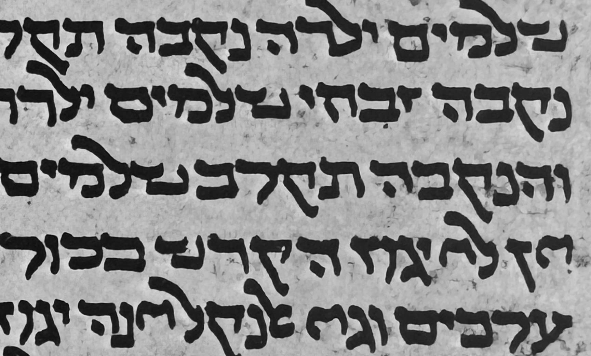
הטיפוס התימני
תימן
מתוך המחקר הכללי על האותיות, בחרתי ליצור פונט, עכשווי ורלוונטי לתקופתנו, מתוך דיאלוג עם שיטת הכתיבה. תהליך ייצור הפונט התחיל דרך מחקר מעמיק יותר של המקורות השונים.
מחקר מקורות
תהליך הפיתוח החל במחקר מקיף של 18 מקורות שונים של הכתב הבינוני, שנבחרו מתקופות שונות ומגזרות גאוגרפיות מגוונות. המחקר הקיף את כלל ענפי הכתיבה העברית המרכזיים — בהם הטיפוס האשכנזי, הספרדי, המזרחי והתימני — מתוך מטרה לעמוד על המכנה המשותף ביניהם ועל הייחוד הצורני של כל סגנון.
כדי לבחון את ההיתכנות הטיפוגרפית של המקורות, נוצר עבור כל אחד מהם ״מיני־פונט״ ייעודי הכולל מספר אותיות נבחרות. שלב זה אפשר לבחון כיצד האותיות עוברות עריכה ראשונית בכלי ווקטורי ואיך הן מגיבות לדיוק הדיגיטלי. מתוך התנסות זו והשוואה בין הטיפוסים השונים, התגבשה השפה הווקטורית העכשווית של ״שמואל״.
בסופו של דבר, מתוך כעשרים כתבי־יד שנחקרו, אף אות לא אומצה כצורה מוגמרת. הבחירות היו אנטומיות במהותן: זיקוק של הפרטים הנכונים למערכת המגובשת של ״שמואל״, תוך תרגום התנועה הידנית לדיוק וקטורי ששומר על החיוניות המקורית של הכתב.
למטה ניתן לראות השוואות בין המקורות ההיסטוריים לבין הגרסה הדיגיטלית שלהם.
סקיצות
תהליך הפיתוח התבסס על ניסיונות כתיבה בכלים וציפורנים שונות כדי ללמוד את התנועה הקליגרפית המקורית. לאחר העיצוב הווקטורי מתוך המקורות, בוצעו תיקונים וסקיצות ידניות באייפד; אלו נועדו להגיע לדיוק מרבי ולייצר איזון מדויק יותר בין השחור (הדיו) ללבן (החלל הפנימי) של הפונט. לאורך כל התהליך נערכה התבוננות רציפה בסריקות המקוריות, ובוצעו שינויים קטנים שנבעו מתוך ניסיון להבין לעומק את הלוגיקה שמאחורי הצורות והסיבות למראה שלהן.
בשל כך, האותיות לא הועתקו אלא תורגמו. כל גליף נבחן מול שתי שאלות: מה הייתה תנועת הכלי המקורית, ומה דורשת המערכת הטיפוגרפית של הפונט כיום. במקרים שבהם נוצר מתח בין השתיים, ההחלטה הוכרעה לטובת הלוגיקה המערכתית, תוך ניסיון להיצמד למקור ככל האפשר, כדי להבטיח שהפונט יתפקד ככלי עיצובי עקבי, שימושי ורלוונטי.
בדיקות ותיקונים
כל אות נבחנה בהקשר של טקסט חי. הבדיקה בגדלים שונים חשפה בעיות שניתוח של אות בודדת לא יכול לגלות, כמו הריתמוס בין אותיות ישרות לעגולות – אתגר משמעותי במבנה הצפוף המאפיין את הכתב הבינוני. המדד המרכזי לא היה יופי של אות בודדת, אלא עקביות המערכת כולה: עובי הקו בנקודות מגע, זווית הסריפים והיחס המדויק שבין גובה האות (x־height) לגוף שלה.
ציר הווריאציה (300–900) הציב אתגר מורכב, שכן הכתב המקורי מתאפיין בדחיסות גבוהה ויוצר ״צבע״ שחור וצפוף מאוד על הדף. בניגוד לתהליכי עיצוב מודרניים שמתחילים לרוב ממשקל ממוצע, כאן נקודת המוצא הייתה הכתב העמוס והכהה. האתגר היה לפענח את הלוגיקה של התנועה הקליגרפית המקורית ולתרגם אותה למערכת וריאבילית, כך שהאופי הייחודי יישמר גם כשמפשיטים מהאות את ה״בשר״ שלה לכדי משקלים קלים. המטרה הייתה למצוא את האיזון המדויק שבין השחור ללבן, תוך שמירה על המתח הצורני הפנימי של הכתב בכל נקודה על הציר.
מאפיינים
שמואל הוא פונט לתצוגה ולכותרות, המיועד לייצר נוכחות ויזואלית חזקה ולא נועד לקריאה של גוף טקסט ארוך. האנטומיה שלו מזקקת את העקרונות המגדירים את הכתב הבינוני: גגות ישרים, בסיסים מעוגלים וחללים פנימיים מצומצמים ועקביים המייצרים ריתמוס צפוף ומובהק.
ציר הווריאציה של הפונט (משקל 500–900) מאפשר שליטה מלאה בעובי האות, תוך שמירה על ה״שלד״ המשותף לסגנון. העיצוב אינו מחקה מסמך היסטורי ספציפי, אלא מייצג מערכת המבוססת על עובי קו מדוד וסריפים בעלי מקור קליגרפי ברור, שאינם מסוגננים באופן מלאכותי אלא נובעים מהלוגיקה של תנועת הקולמוס.
מעבר לצד הטכני, ״שמואל״ הוא ניסיון מחקרי לבדוק האם כתב שנעלם כמעט לחלוטין לפני כחמש מאות שנה יכול להפוך לכלי עבודה פונקציונלי ורלוונטי ב־2026. הפרויקט מציע נקודת אמצע מוגדרת: מחויבות מלאה לעקרונות האנטומיים והקליגרפיים של המקור, לצד חופש עיצובי מכוון בפרטים הקטנים כדי להבטיח את שימושיותו במרחב העיצובי והדיגיטלי העכשווי.